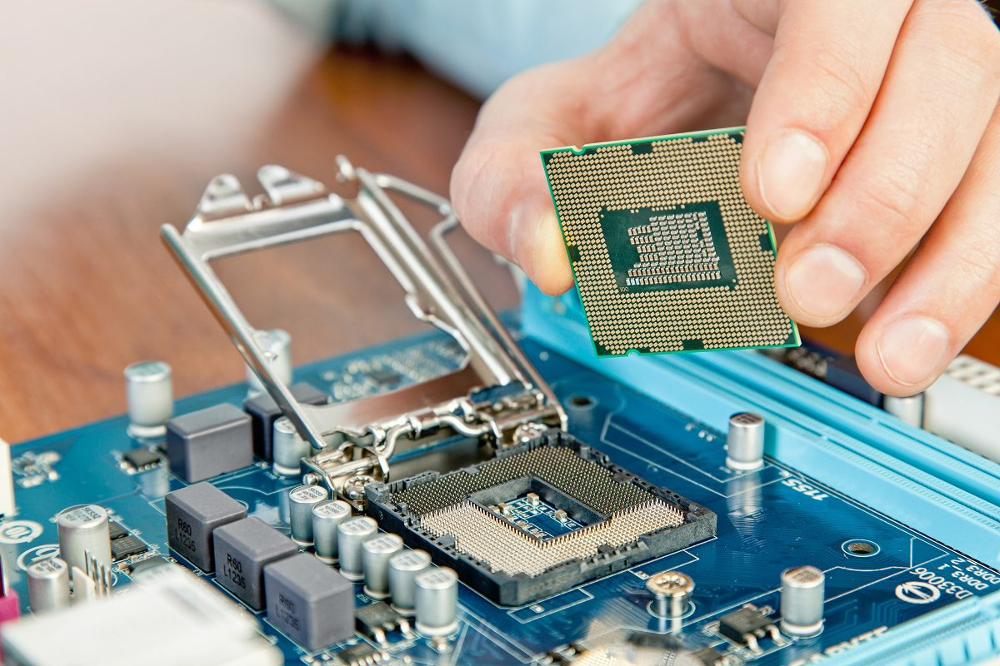

Softwares
Software é um conjunto de instruções, dados ou programas usados para operar computadores e executar tarefas específicas. Ele é o oposto do hardware, que se refere aos componentes físicos de um computador.
Em termos simples, o software é a parte intangível, sendo a parte lógica do computador. Pense, por exemplo, em uma calculadora. O software é o programa que permite realizar operações matemáticas como adição, subtração, multiplicação e divisão. Ele interpreta seus comandos e os traduz em ações que o hardware da calculadora pode entender e executar.
Existem diferentes formas de software, desde simples scripts que automatizam tarefas repetitivas até complexos sistemas operacionais que gerenciam todos os recursos de um computador.
Hardware
Hardware é todo e qualquer componente ou equipamento físico, tanto dentro quanto fora da Tecnologia da Informação. De uma maneira geral, qualquer máquina, ferramenta ou utensílio, de uma máquina de fresa a uma chave-inglesa, passando pelo seu celular ou computador é um hardware. Talheres, peças, dobradiças, engrenagens, parafusos, chips, processadores, tudo isso é hardware.